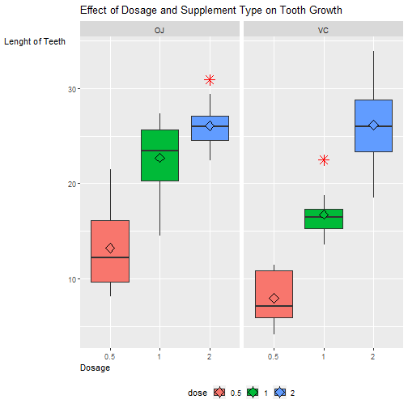

####Introduction Now in the second portion of the project, we're going to analyze the ToothGrowth data in the R datasets package.
See if there is diiferent effect on toothgrowth over several different supplementation
#####1.Load the ToothGrowth data and perform some basic exploratory data analyses Load and pre-precoess data
library(datasets)
data("ToothGrowth")
dim(ToothGrowth)
## [1] 60 3
str(ToothGrowth)
## 'data.frame': 60 obs. of 3 variables:
## $ len : num 4.2 11.5 7.3 5.8 6.4 10 11.2 11.2 5.2 7 ...
## $ supp: Factor w/ 2 levels "OJ","VC": 2 2 2 2 2 2 2 2 2 2 ...
## $ dose: num 0.5 0.5 0.5 0.5 0.5 0.5 0.5 0.5 0.5 0.5 ...
head(ToothGrowth)
## len supp dose
## 1 4.2 VC 0.5
## 2 11.5 VC 0.5
## 3 7.3 VC 0.5
## 4 5.8 VC 0.5
## 5 6.4 VC 0.5
## 6 10.0 VC 0.5
ToothGrowth$dose<-as.factor(ToothGrowth$dose)
str(ToothGrowth)
## 'data.frame': 60 obs. of 3 variables:
## $ len : num 4.2 11.5 7.3 5.8 6.4 10 11.2 11.2 5.2 7 ...
## $ supp: Factor w/ 2 levels "OJ","VC": 2 2 2 2 2 2 2 2 2 2 ...
## $ dose: Factor w/ 3 levels "0.5","1","2": 1 1 1 1 1 1 1 1 1 1 ...
summary(ToothGrowth)
## len supp dose
## Min. : 4.20 OJ:30 0.5:20
## 1st Qu.:13.07 VC:30 1 :20
## Median :19.25 2 :20
## Mean :18.81
## 3rd Qu.:25.27
## Max. :33.90
library(ggplot2)
ggplot(ToothGrowth,aes(x=dose,y=len,fill=dose))+
geom_boxplot(outlier.color = "red",outlier.shape = 8,outlier.size = 4)+
stat_summary(fun.y=mean, geom="point", shape=23, size=4)+
facet_wrap(~supp)+
theme(legend.position = "bottom",
axis.title.y = element_text(vjust = 1, angle = 0)
,axis.title.x = element_text(hjust = 0))+
xlab("Dosage")+
ylab("Lenght of Teeth")+
labs(title=expression("Effect of Dosage and Supplement Type on Tooth Growth"))

#####2. Provide a basic summary of the data.
summary<-summary(ToothGrowth)
summary
## len supp dose
## Min. : 4.20 OJ:30 0.5:20
## 1st Qu.:13.07 VC:30 1 :20
## Median :19.25 2 :20
## Mean :18.81
## 3rd Qu.:25.27
## Max. :33.90
sd<-sd(ToothGrowth$len)
sd
## [1] 7.649315
#####3. Use confidence intervals and/or hypothesis tests to compare tooth growth by supp and dose. (Only use the techniques from class, even if there's other approaches worth considering)
Supplement
test1<-t.test(len~supp,paired=F,var.equal=TRUE,data = ToothGrowth)
test2<-t.test(len~supp,paired=F,var.equal=FALSE,data=ToothGrowth)
supp.test<-data.frame("p.value"=c(test1$p.value,test2$p.value),
"lower.bound"=c(test1$conf[1],test2$conf[1]),
"upper.bound"=c(test1$conf[2],test2$conf[2]),
row.names=c("Var.Equal","Var.Unequal"))
supp.test
## p.value lower.bound upper.bound
## Var.Equal 0.06039337 -0.1670064 7.567006
## Var.Unequal 0.06063451 -0.1710156 7.571016
Dosage
d0.5<-subset(ToothGrowth,ToothGrowth$dose %in% c(0.5))
d1.0<-subset(ToothGrowth,ToothGrowth$dose %in% c(1.0))
d2.0<-subset(ToothGrowth,ToothGrowth$dose %in% c(2.0))
test.5<-t.test(len~supp,paired=FALSE,var.equal=FALSE,data=d0.5)
test.out.5<-data.frame("p.value"=c(test.5$p.value),
"Estimated mean"=c(test.5$estimate),
"lower.bound"=c(test.5$conf[1]),
"upper.bound"=c(test.5$conf[2]))
test.out.5
## p.value Estimated.mean lower.bound upper.bound
## mean in group OJ 0.006358607 13.23 1.719057 8.780943
## mean in group VC 0.006358607 7.98 1.719057 8.780943
test.1<-t.test(len~supp,paired=FALSE,var.equal=FALSE,data=d1.0)
test.out.1<-data.frame("p.value"=c(test.1$p.value),
"Estimated mean"=c(test.1$estimate),
"lower.bound"=c(test.1$conf[1]),
"upper.bound"=c(test.1$conf[2]))
test.out.1
## p.value Estimated.mean lower.bound upper.bound
## mean in group OJ 0.001038376 22.70 2.802148 9.057852
## mean in group VC 0.001038376 16.77 2.802148 9.057852
test.2<-t.test(len~supp,paired=FALSE,var.equal=FALSE,data=d2.0)
test.out.2<-data.frame("p.value"=c(test.2$p.value),
"Estimated mean"=c(test.2$estimate),
"lower.bound"=c(test.2$conf[1]),
"upper.bound"=c(test.2$conf[2]))
test.out.2
## p.value Estimated.mean lower.bound upper.bound
## mean in group OJ 0.9638516 26.06 -3.79807 3.63807
## mean in group VC 0.9638516 26.14 -3.79807 3.63807
#####4. State your conclusions and the assumptions needed for your conclusions.
T test result based on supplement type shows that indeed supplement type does not affect toothgrowth, since 95% confidence interval does include zero, therefore in Hypothesis test, we cannot reject H0 which is there is not true difference in means of OJ and VC.
T test based on dosage, when the amount of dosage is 0.5 and 1.0 milligram, OJ and VC has different effect on toothgrowth. Technically, when it is the case, OJ has more faster effect on toothgrowth.
When the dosage is 2.0milligram, there might not be difference in toothgrowth. Even if it's there, both has kind of same effect on toothgrowth.
Dosage has greater effect than supplement on toothgrowth